Lecture01
Module Overview & What is Science?
03 October, 2022
Key topics today
- Module structure and coursework
- Critical Proposal (15%)
- Mini-Dissertation (70%)
- Conceptual, Historical & Integrative Perspectives Log (CHIP Log) (15%)
- Labs in general and the lab tomorrow
- Materials, independent study, SUCCESS!


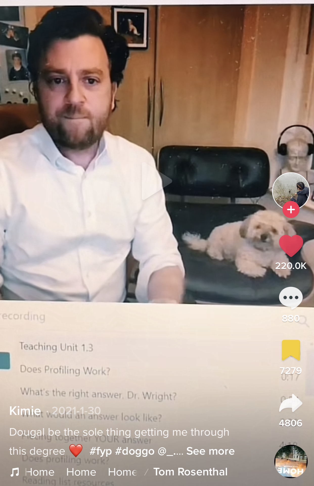
But seriously…
- Formerly worked in advertising industry for big agencies
- Impulsively started a Psych degree in 2006 (age 30+)
- My research interests are interpersonal deception, antagonistic personalities and behaviours, and how people obtain, process, and use social information/person perception in their everyday lives
- Got my PhD in 2014, post-doc with the Intelligence Agencies, Teaching Fellow then Lecturer in the department of Psychology
- And I LOVE IT !! The Psychology we do here is unique!
But first
- The importance of your ‘participation’
- If you don’t engage, it is difficult to respond to your needs
- I want you to find “MyPsychology”
- Easier to keep up than catch-up
- We have numerous safeguards in place to protect you this year
- The only thing that should be worried this year is Shoddy Science!
Module Overview
Module weighting and assessment
Research Methods is a core module with a 30 credit weighting
This means that in order to progress to Y3, you must pass all 3 assessment elements:
Critical Proposal 1,800 words (15%)
Mini-Dissertation 2,500 words (70%)
CHIP Learning Log 1,200 words (15%)
Welcome to Research Methods!
APA Skillful Psychology Student
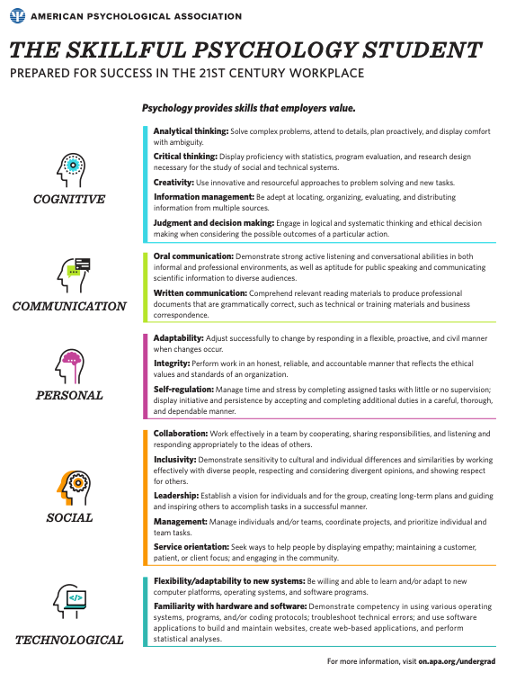Naufel, K. Z., Appleby, D. C., Young, J., Van Kirk, J. F., Spencer, S. M., Rudmann, J., …Richmond, A. S. (2018).The skillful psychology student: Prepared for success in the 21st century workplace. Retrieved from: https://www.apa.org/careers/resources/guides/transferable-skills.pdf
Cognitive Skills
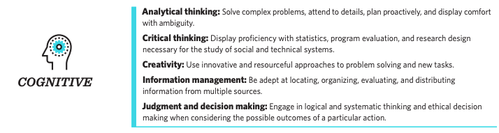Communication Skills
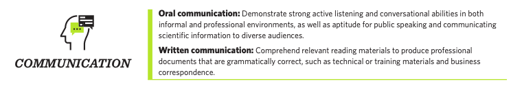Personal Skills
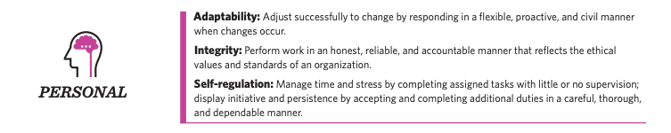Technological Skills
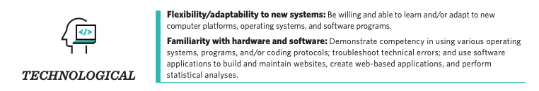These are valuable skills
I’m going to try to ‘connect the dots’ for you along the way
- Cognitive (e.g., creativity and information management).
- Communication (e.g., active listening and public speaking).
- Personal (e.g., conscientiousness and integrity).
- Social (e.g., collaboration and leadership abilities).
- Technological (e.g., flexibility and familiarity with hardware and software).
- No actual mention of the ‘content’ - Psychology or Research
You aren’t spectators any more, you’re Scientists!
In small groups of 3 or 4 people, you will:
- Identify an area of psychological research
- Review and critique the literature in this area (Critical Proposal)
- Develop a testable hypothesis
- Design a 2x2 ANOVA experiment unique to you (within your group study)
- Obtain Ethical Approval for your experiment
- Collect REAL data
- Analyse these data
- Write up the results in APA format with Open Data and Materials (Mini-Diss)
- Reflect on your learning and development journey (CHIP Learning Log)
Consider it a ‘warm up’ for your Y3 Dissertation
- The same 20-week timeline
- The same skills and techniques you will need
- Careful step-by-step guidance and support in the lab setting
- Scaled-down experiments and write-ups - but all the same moving parts
- The security of working in a group
- Tips and advice from world-class researchers
- Opportunities to think carefully about your final year Dissertation, and how to crush it!!
Support and guidance
- Gordon (Module Coordinator and Enthusiast in Chief)
- 7 gobsmackingly amazing Lab Tutors
- Your Mini-Dissertation group (3 or 4)
- Your Personal Tutor
- Your PT group
- The entire Goldsmiths Research Community!
This is a team-sport
Access to me
I will be in every Research Methods lecture and I have a Student Hour from 3-4 every Monday, before we all go to the Design & Analysis lecture. Yup! Me too!
Available at g.wright@gold.ac.uk and my office is WB200/1
I genuinely could not imagine anything I would rather do that this. So please talk to me!
A friendly warning
Warning
All coursework is INDIVIDUAL and subject to normal plagiarism and collusion rules.
Just don’t risk it. Be mindful of how you read, take notes and share coursework.
Module structure
1 x 1 hr Lecture per week (Monday 11-12 PSH LG02)
1 x 2 hr Lab per week (Tuesday in Whitehead)
4 x Personal Tutor meetings focussed on the Mini-Diss across the year
Weekly Structure (Lectures)
A brief weekly ‘Prelude’ designed to introduce one of the main topics of the week (Not compulsory)
Lecture covering Methods relevant to your research, concepts and debates around CHIP, and previewing the lab session that week
(recording posted automatically to Panopto)
*Materials for following week posted on Wednesday evening
CHIP-relevant topics to be approved as a group (more on that later)
*Accessibility is important to me, so please contact me with any concerns or requests
Weekly Structure (Labs)
- ‘Pulse’ taken on entry - 2 minute quiz - COMPULSORY
- OneNote Lab Notebook with brief ‘generative activities’ and opportunities for metacognitive reflection (wk2)
- Your ‘Source of Truth’
- Lots can be achieved in the labs, but independent study and coordinated group work will be required
- This module is a process not a goal - approach it like an experiment!
- NO EXAM
- Extras provided around skills or applications or just interesting stuff (Not compulsory)
Coursework
The courseworks ALL require reflection and metacognitive practice. This will be discussed in a number of lectures, but it contributes to effective learning and your integration of the skills and experience.
Time management and teamwork
..will both be required.
I ask you to see both as an opportunity to deliberately practice these important skills.
You will see we have some ideas to make this more relevant to careers and employability.
It is easier to ‘keep up than to catch up’.
Resources
We will be releasing a series of valuable resources to help you through every step of the process
These will entirely relevant to your final year dissertation also.
Contribution to and comment on these is welcome and hoped for!
Open Educational Resources will be used extensively, and most core readings are available online via the library.
Lectures Term One
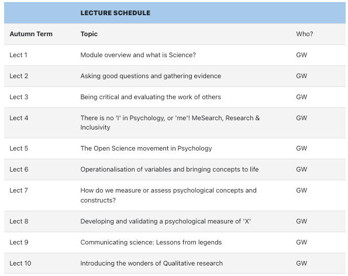Lectures Term Two
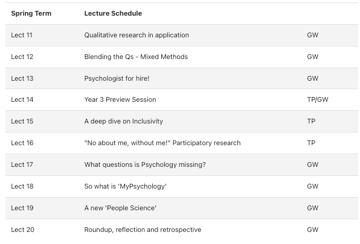Labs Term One
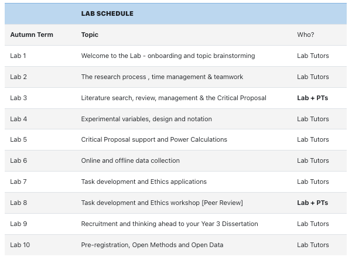Labs Term Two
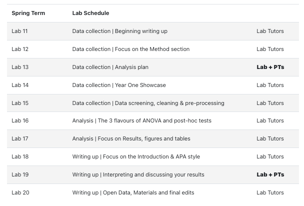Mini-Dissertation structure
Your individual Mini-Dissertation project MUST conform to the following definitive rules:
- 2x2 ANOVA design with 2 categorical IVs (each with 2 levels) and a single continuous DV
- You must obtain ethical approval and show individual involvement in the process of application
- You must make a sample size estimation / Power calculation
- You must contribute to group recruitment and data collection efforts either online or in-person
Mini-Dissertation Submission
Your Mini-Dissertation final submission must comprise ALL of the following COMPULSORY elements:
- a 2,500 word APA7 empirical paper with a complete reference list and appendices
- Open Data - a single, cleaned, clearly-labelled data set
- Open Materials - a complete, replication-ready materials package detailing materials relevant to your individual write-up
- A reflective account covering the Mini-Dissertation AND the PS52005C Design & Analysis quizzes and how they contributed to your development this year
Illustrative MD topics
- The effect of gender stereotype and task difficulty on memory performance
- The role of facial symmetry and filter type on ratings of attractiveness of online dating profile pictures
- Exposure to negative news media, trait anxiety and the BAME community under COVID-19
- The effects of Agentic and Communal Narcissism, attitudes towards COVID-19 and lockdown compliance
- The effect of personality and sleep disturbance on academic performance
- Need for cognition, pre-sentencing information and perceptions of guilt in a jury decision making task
But let’s deep dive this one
The effect of Conscientiousness and Caffeine intake on Academic Self-Handicapping
- The effect of Independent Variable 1 and Independent Variable 2 on a continuous Dependent Variable
- Conscientiousness (Low or high - Independent Variable IV1)
- Caffeine intake (Low or high - Independent Variable IV2)
- Academic Self-Handicapping (6 item 1-5 Likert style, ‘continuous’ Dependent Variable DV)
- What about the other 3 people in the group?
Rest of the group:
The effect of Conscientiousness and Caffeine intake on Academic Self-Handicapping
- Extraversion (Low/High) & Sleep (Sound/Disturbed) on ASH
- Openness to experience (Low/High) & Family Attitude to Education (Pro/Con) on ASH
- Neuroticism (Low/High) & Attitude to Feedback (Open/Sensitive) on ASH
- Not too complicated, right?
- Can you see the economies of effort and implicit support opps?
Lab 01
- Scan your attendance (?) and sit down to complete the short ‘Entry Pulse’ poll (Compulsory each week).
- Verify access to IT systems (e.g. the critically important OneDrive) and add a signature to your emails to assist College answering any questions you have.
- Start brainstorming ideas for research topics for your Mini-Dissertation.
- Consider ‘how’ you want to work this year - Help co-create a ‘Lab Ethos’ that we can share openly.
- Detailed information in the Lab 01 ‘Book’ on the VLE
Please don’t get hung up on topic selection
Tip
You might think coming up with a research topic is a difficult thing. For this year, it is NOT super-important. Your Lab Tutors will be available to help you make sure it’s feasible, challenging enough but not too difficult etc.
It does help if you are interested in it though, as it will help keep motivation up!
Some things to consider
Caution
Picking something without much of a literature behind it can make life VERY difficult
We will try to make sure things remain manageable, we are not trying to ‘restrict’ you
You will not be able to do research
- on Children
- on Vulnerable or protected groups
- using methods that require extensive training or specialist facilities (e.g. EEG, TMS)
- that raises anything more than mild ethical considerations
- for which recruitment will be too onerous or time-consuming
Defining how you wish to work
We would like you to compose a ‘code of conduct’ or ‘Lab ethos’ applicable to us all this year.
Goldsmiths Student Charter (2012) Does much change in a decade?
BPS Research Ethics (respect, competence, responsibility, integrity)
Corporate Culture (e.g. “Move fast and break things” i.e. approaching the task with an emphasis on speed, disruption and experimentation)
Innovative Teaching (e.g. The Hacker School/Recurse Center - No feigning surprise, No ’Well-Actually’s, No back-seat driving, no subtle -isms)
How will we approach the following?
Inclusivity, Diversity, Equity, Privilege, Power, Intersectionality
Communication, Accommodation, Environment, Accessibility, Collaboration
Data Carpentry suggests the following for their labs
- Use welcoming and inclusive language
- Be respectful of different viewpoints and experiences
- Gracefully accept constructive criticism
- Focus on what is best for the community
- Show courtesy and respect towards other community members
Recurse Center ‘Social Rules’
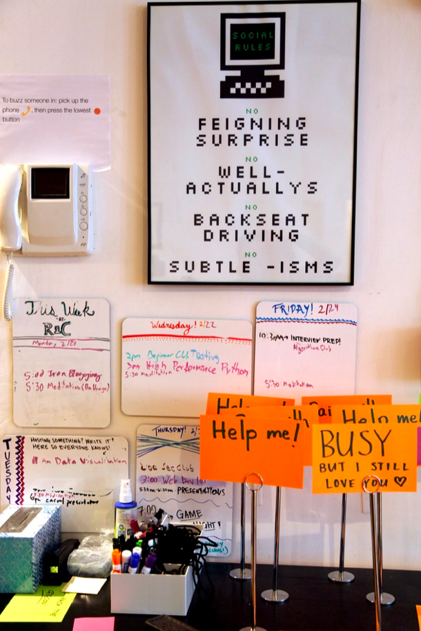On behalf of the whole teaching team
Have a wonderful year!
Social Skills
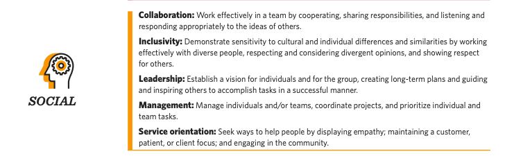